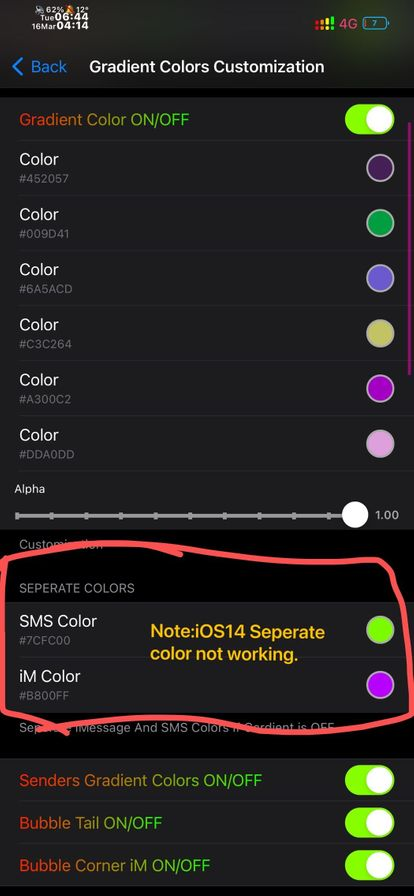

Gradient Bubble Color Effects in meesage app.
Reciever or senders message gradient colors.It looks so beautiful.Checkout ScreentShots.
Note:libimagepicker, libcolorpicker must need installed.
-Custom Gradient Colors.
-Incoming Mesage Custom Gradients.
- Custom Background Image or Color.
-Seperate colors options for SMS or iMessage. Tweak not working fully on iOS14.Stay tuned for updates.
-Custom Colors & Alpha.
-Thinking Bubble Custom Colors.
-Thinking Dot Custom Colors.
-Corner for iMessages.Looks beautifull.
-Progess Bar Custom Colors Systemwise.
-Text Selections Custom Colors Systemwise.
-Language Support for preferences. Help in translation in your language.
